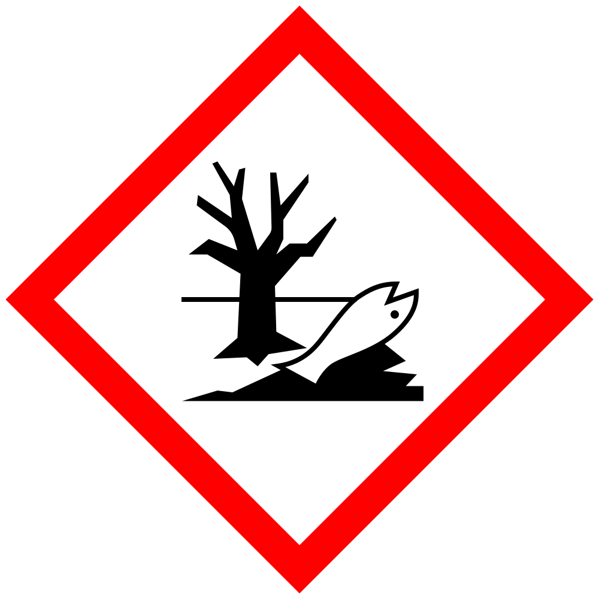
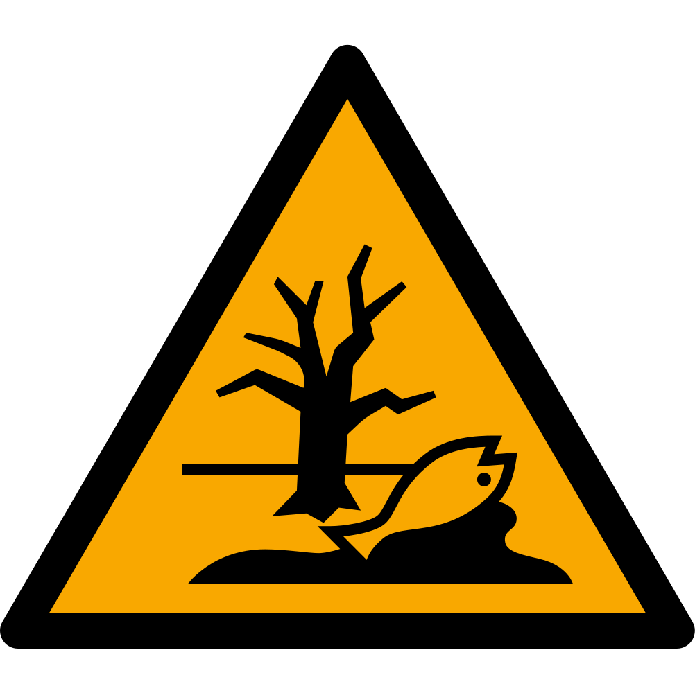

Environmental hazard
History
Shipping rules once marked sea pollutants with a warning nicknamed "fish and chips." A dead fish and tree replaced it, mandatory at sea from 2010. The Globally Harmonized System for chemical labeling shows the design in a red diamond.
Adoption
The dead fish and tree are a global standard for warning of chemicals that harm water life.
Sources

Diamond
